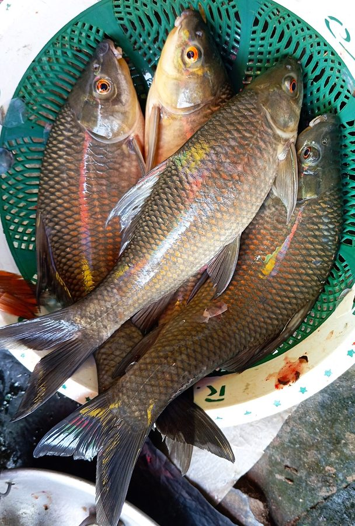

कालबासुKalbasu
Labeo calbasu · Cyprinidae · FSH-0010

- Scientific name
- Labeo calbasu (Hamilton, 1822)
- Family
- Cyprinidae
- Hindi
- कालबासु
- Status here
- native
- IUCN
- LC
When to look कब देखें
Present all year.
कालबासु / Kalbasu
Labeo calbasu (Hamilton, 1822) — Cyprinidae
कालबासु (काली रोहू) — पूर्वी उत्तर प्रदेश के बड़े तालाबों, नदियों और जलाशयों में पाई जाने वाली एक अत्यंत महत्वपूर्ण मीठे पानी की निवासी मछली है। यह "भारतीय मेजर कार्प" (Indian Major Carp) समूह का हिस्सा है। इसका शरीर गहरा स्लेटी-काला या बैंगनी-काला होता है, और इसकी सबसे बड़ी पहचान इसका नीचे की ओर खुला मुंह (sub-inferior mouth) है जिसके होंठ झिलमिल या कांटेदार (fringed lips) होते हैं। इसके मुंह के पास दो जोड़ी पतले मूंछ जैसे अंग (barbels) होते हैं। यह मुख्य रूप से पानी की तलहटी (bottom) में रहती है और वहां जमा जैविक मलबे, शैवाल और घोंघों को खाकर पानी की सफाई में मदद करती है।
Quick Identification त्वरित पहचान
| Feature | Description |
|---|---|
| Size | Medium to large fish (typically 30–65 cm total length); weight 500–3500 g |
| Colouration | Uniformly dark greyish-black, dark purplish-black, or bronze-black; lighter underbelly |
| Mouth | Sub-inferior (downward-pointing) mouth with prominent fringed lips |
| Barbels | Four distinct, thin barbels (two rostral, two maxillary) around the mouth |
| Fins | Dark fins; dorsal fin has a moderately high, curved margin |
Field tip: Look in catch bags from village ponds. Easily identified by its uniform dark charcoal-black color, downward-facing fringed mouth, and four distinct barbels, which differentiate it from the lighter and larger Rohu.
Morphology आकारिकी
Biometrics (typical measurements for adult specimens in Gangetic plain fisheries):
| Measurement | Range |
|---|---|
| Standard length (SL) | 250–550 mm |
| Total length (TL) | 300–650 mm |
| Weight | 500–3500 g |
Body structure: The body is moderately deep, elongated, and laterally compressed. The snout is obtuse, depressed, and covered with small pores. The mouth is sub-inferior (ventral), specialized for bottom feeding. The lips are thick and distinctly fringed. Two pairs of barbels are present; the rostral barbels are slightly longer than the maxillary barbels. The scales are large and cycloid, with 40–44 scales along the lateral line. The dorsal fin is situated midway along the back, possessing 15–18 soft rays.
Color details: The dorsum and flanks are dark greyish-black to dark purple-black, with metallic bronze reflections on individual scales. The abdomen is lighter, turning dull white or pinkish-grey. All fins are uniformly dark grey or blackish.
Behaviour & Ecology व्यवहार और पारिस्थितिकी
Benthic dweller and bottom feeder.
- Benthic foraging: Spends almost all its time in the lowest depth zone (benthic zone) of ponds and rivers, using its sensitive barbels to detect food hidden in organic silt and mud.
- Suction feeding: Uses its muscular, downward-pointing fringed lips to vacuum up detritus, algae, and small benthic invertebrates from the mud.
- Monsoon migration: Migrates upstream into shallow flooded grasslands and river tributaries to spawn during the early monsoon, triggered by sudden water temperature drops and fresh rainwater flow.
Ecological Role पारिस्थितिक भूमिका
Benthic cleaner and recycler.
- Silt cleanup: By consuming decaying organic matter, benthic algae, and detritus at the pond bottom, they prevent the buildup of toxic ammonia gases and improve general water quality.
- Composite culture balance: In traditional fisheries, they occupy the bottom-most ecological niche, utilizing resources that other major carps (like surface-feeding Catla and mid-water Rohu) cannot reach.
Life Cycle / Phenology जीवन चक्र
- Spawning season: June to August, coinciding with the peak of the monsoon season.
- Breeding habitat: Spawns in fast-flowing river currents or flooded fields where fresh oxygenated water is available.
- Egg release: A single mature female can lay 200,000 to 1,000,000 small, non-adhesive, semi-buoyant eggs that drift with water currents.
- Incubation: Eggs hatch within 15–18 hours in warm monsoon waters (26–30°C).
- Larval growth: The fry feed on microscopic benthic organisms. They grow rapidly in nutrient-rich flooded plains, migrating back to deeper river channels or ponds as the floodwaters recede.
Host Plants or Prey आहार
Primary food items:
- Detritus: Decomposing aquatic plant matter and organic mud.
- Algae: Benthic diatoms and green algae covering bottom stones.
- Invertebrates: Small pond snails (such as [MOL-0004 Ramshorn Snail] or young [MOL-0001 Apple Snail]), aquatic worms, and larvae of midges.
Predators / Natural Enemies शत्रु
- Predatory Fish: Large snakeheads (such as [FSH-0009 Great Snakehead]) and Wallago catfish (Wallago attu) prey on juvenile and sub-adult Kalbasu.
- Reptiles: Water snakes target juveniles in shallow margins.
- Birds: Fish-eating eagles and storks capture sub-adults in shallow ponds.
Agricultural / Human Relevance कृषि प्रासंगिकता
Benthic component of composite culture.
- Composite fish farming: Highly important in UP's composite fish culture system (mishrit machhli palan). They are stocked alongside Rohu [FSH-0001 Rohu] (mid-water feeder) and Catla [FSH-0002 Catla] (surface feeder). By utilizing different depth layers, farmers maximize fish production without feed waste.
- Economic value: Although its growth rate is slightly slower than Rohu, its sweet flesh is highly prized in Basti and surrounding district markets, fetching a steady price.
- Aquarium trade: Young juveniles with their velvety black color and active bottom-searching behavior are sometimes sold as "black sharks" in the local aquarium trade.
Expected Locally स्थानीय रूप से अपेक्षित
Not a field record. Written from published accounts for eastern Uttar Pradesh. No confirmed local sighting yet — if you have seen it, that is what the atlas needs.
अभी तक स्थानीय पुष्टि नहीं। यह विवरण प्रकाशित स्रोतों से है, किसी अवलोकन से नहीं।
Commonly harvested from perennial ponds (talab) and block-level fishery nurseries throughout Basti. In rural fish markets, they are instantly recognized by buyers by their dark color. Anglers catch them using bottom-sinking dough baits made from wheat flour and mustard oil cake (khali).
Distribution वितरण
Global range: Widespread in Pakistan, India, Bangladesh, Nepal, Myanmar, and Thailand.
In India: Found throughout the major river systems of northern and central India, including the Ganges, Brahmaputra, and Mahanadi basins.
In Uttar Pradesh: Common in all major rivers (Ganges, Yamuna, Ghaghra, Sarayu) and heavily stocked in culture ponds.
In Basti district / eastern UP: Found in the Ghaghra river channel, sluggish streams like the Kuwano, and village panchayat ponds leased for fish farming.
Research Questions शोध प्रश्न
Anyone can investigate these | कोई भी इन प्रश्नों की जाँच कर सकता है
- How does the growth rate of Kalbasu compare when cultured alone vs. in a composite system with Rohu and Catla in Basti? — Set up experimental ponds and measure monthly weights.
- What is the preference of Kalbasu for feeding on organic detritus compared to commercial sinking pellets? — Analyze stomach contents of pond-reared fish.
- Can Kalbasu be used as a biological control agent for parasite-hosting pond snails in village tanks? — Monitor snail populations in ponds stocked with different densities of Kalbasu.
- How do different levels of water turbidity at the bottom of ponds affect the feeding efficiency of this species? / तालाबों की तलहटी में पानी का गंदलापन (turbidity) इस मछली के भोजन करने की क्षमता को कैसे प्रभावित करता है? — Observe feeding behavior in clear vs. muddy aquariums.
- Does the use of chemical fertilizers in agricultural runoff affect the survival of Kalbasu eggs in seasonal channels? / कृषि अपवाह में रासायनिक खादों के उपयोग का मौसमी नहरों में कालबासु के अंडों के जीवित रहने पर क्या प्रभाव पड़ता है? — Test water quality and egg hatching success in runoff channels.
Similar Species मिलती-जुलती प्रजातियाँ
| Species | Key Difference | हिंदी |
|---|---|---|
| [FSH-0001 Rohu] (Labeo rohita) | Lighter, bluish-grey dorsally with reddish scales; mouth is terminal (not downward-facing); lips are not fringed; lacks prominent barbels | रोहू — हल्की नीली-धूसर, सीधा मुँह, झिलमिल होंठ रहित |
| Labeo gonius (Kurias Barb / Kuria Labco) | Smaller scales; dark longitudinal lines along body scale rows; smaller, lighter body | करौंच / कुरीया — छोटे शल्क, शरीर पर बारीक काली रेखाएँ |
| Wallago attu (Giant Catfish) | Scaleless; massive mouth with long whiskers; highly elongated anal fin; predator | पढ़िन — शल्क रहित शरीर, विशाल मुँह, नुकीले दाँत |
Field rule: Deep purplish-black body, ventral mouth with fringed lips, four distinct barbels, and bottom-dwelling habit identify the Kalbasu.
Taxonomy & Classification वर्गीकरण
Original description. Francis Hamilton described the Kalbasu as Cyprinus calbasu in 1822 in his seminal work An Account of the Fishes found in the river Ganges and its branches (pp. 297, 387). The type locality was the rivers of Bengal. The genus name Labeo is derived from the Latin labco (one with large lips). The specific name calbasu is a Latinized form of the Hindi/Bengali local name Kalbasu or Kahal-basu.
Subspecies. Monotypic — no subspecies are currently recognised.
Family and order placement. Placed in the order Cypriniformes, family Cyprinidae.
Phylogenetic notes. Labeo calbasu is closely related to other large Asian cyprinids of the genus Labeo, sharing a common ancestry characterized by highly specialized lips and bottom-feeding structures.
IUCN status rationale. Listed as Least Concern (LC) due to its extensive geographical distribution, high aquaculture production, and lack of immediate major threats, though riverine populations have declined due to dam construction and overfishing.
Photo Gallery फोटो गैलरी
References संदर्भ
- Hamilton, F. (1822). An Account of the Fishes found in the river Ganges and its branches. Archibald Constable & Co., Edinburgh, pp. 297, 387. [original description]
- Talwar, P. K. & Jhingran, A. G. (1991). Inland Fishes of India and Adjacent Countries. Vol. 1. Oxford & IBH Publishing Co., New Delhi.
- Jayaram, K. C. (2010). The Freshwater Fishes of the Indian Region. 2nd ed. Narendra Publishing House, Delhi.
- Rainboth, W. J. (1996). Fishes of the Cambodian Mekong. FAO Species Identification Field Guide for Fishery Purposes. FAO, Rome.
- IUCN SSC Freshwater Fish Specialist Group (2024). Labeo calbasu. IUCN Red List of Threatened Species. Ver. 2024.
- GBIF Occurrence Data — Labeo calbasu, Uttar Pradesh (2010–2025).
Source file: species/fauna/fish/kalbasu.md